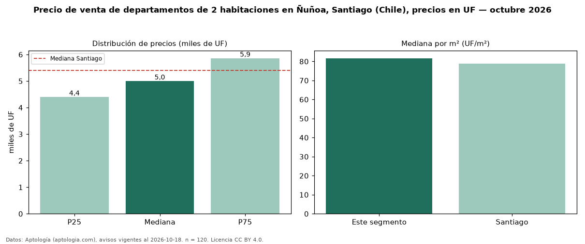

Precio de venta de departamentos de 2 habitaciones en Ñuñoa, Santiago (Chile), precios en UF — octubre 2026
UF 5.000 es el precio mediano de departamentos de 2 habitaciones en venta en Ñuñoa, Santiago (Chile) (n = 120 avisos). Frente a la mediana de Santiago para departamentos de 2 habitaciones (UF 5.400), queda 7 % por debajo. Por metro cuadrado, la mediana es UF 81,69/m² (n = 78 avisos con área), 4 % por encima de Santiago (UF 78,89/m²). Son 48 % de los 251 avisos de departamentos en venta de la zona, cuya mediana general es UF 4.990 (+0 %). Con el precio por m² de arriendo del mismo segmento (UF 0,28/m² al mes), la rentabilidad bruta implícita es 4,2 % anual (aproximación con medianas de ofertas distintas). El área mediana anunciada es 59 m². La mitad central de los avisos va de UF 4.400 a UF 5.860 (razón 1,3), una dispersión baja. Datos: Aptología (aptologia.com), CC BY 4.0 — https://www.aptologia.com/cl/venta/santiago/nunoa. Archivos: PDF, CSV con las cifras y gráfica PNG.

| Avisos únicos | 120 |
|---|---|
| Percentil 25 | COP 4.400 |
| Mediana | COP 5.000 |
| Percentil 75 | COP 5.860 |
| Mediana por m² | COP 81 |
Fuente: avisos vigentes de portales inmobiliarios recopilados por Aptología, deduplicados (mínimo 30 avisos únicos por celda). Precios pedidos, no cerrados. Fecha: 2026-10-18.